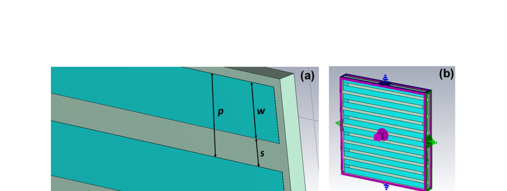
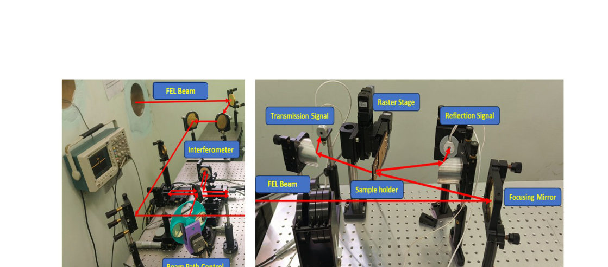
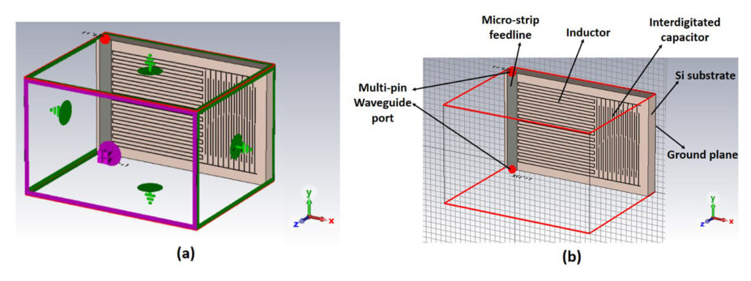

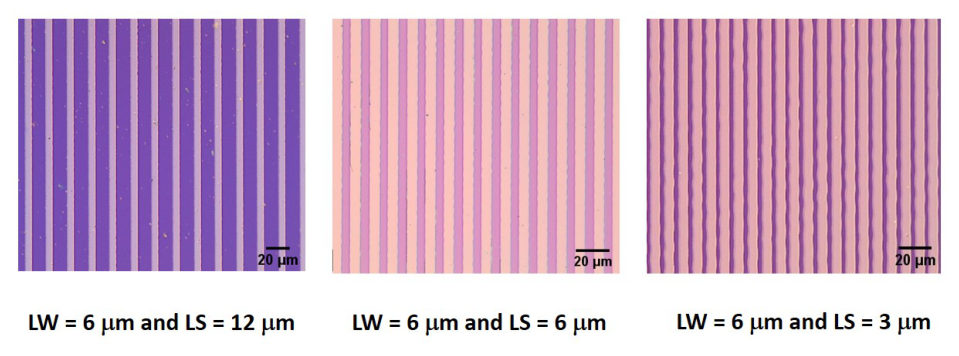
Authors: Shilpam Sharma, Shekhar Chandra Pandey, Anudeep Singh, Shankar Lal, R. S. Saini, M. K. Chattopadhyay
Type: both · Category: other · PDF: https://arxiv.org/pdf/2606.09309v1
Analysis basis: full PDF text, analyzed in chunks
Topic relevance: correlated / nonlocal dissipation 1/5 · driven-dissipative phase transition 1/5 · interference shaping light 1/5 · methods for driven-dissipative 1/5




Summary. This work introduces a breakthrough detector design for mid-to-far infrared spectroscopy: a cavity-free absorber built from superconducting metallic meanders. By engineering the structure's impedance and exploiting sub-wavelength periodicity, the authors achieve high broadband absorption without the complexity of traditional resonant cavities. This establishes a scalable platform for next-generation MIR-FIR quantum detectors.
Why it may be interesting. While primarily an applied condensed matter/detector physics paper, the concept of using metamaterial periodicity to engineer near-perfect absorption by coupling incident energy into confined Ohmic losses is relevant to understanding loss mechanisms in quantum optical cavities or engineered dissipation channels in open quantum systems.
Main problem. The primary challenge is developing fast, highly sensitive, and broadband detectors for the mid-to-far-infrared (MIR-FIR) spectral region.
Main result. A novel, cavity-free LEKID absorber architecture using superconducting Ti-V alloy meanders achieves high broadband absorption (50-90%) across 12.5-30 $\mu$m, simplifying detector fabrication significantly.
Method. The authors combine electromagnetic simulation (CST) with experimental characterization using an IR Free-Electron Laser (IR-FEL) to measure optical transmission and reflection.
Model / system. The system involves patterned metallic meander absorbers ($ ext{Ti}{40} ext{V}$) deposited on a silicon substrate. The mechanism relies on impedance matching at the front side and evanescent wave confinement due to sub-wavelength periodicity.
Key observables. Absorption efficiency (50-90%), broadband spectral response ($12.5 - 30 \mu ext{m}$), and microwave resonance dip in a test LEKID resonator.
Important parameters / regimes. Wavelength range ($\lambda$), meander line spacing ($ ext{LS} = 3, 6, 12 \mu ext{m}$), superconducting material ($ ext{Ti}{40} ext{V} \sim 110 \Omega$).}$), and wave impedance matching ($Z_{ ext{meander}
Assumptions / limitations. The analysis assumes that substrate effects can be mathematically de-embedded from measured optical data, and for the microwave test, it compares simulated vs. measured resonance behavior.
Figures summary. Figures show schematic meander structures, experimental setups using IR-FEL, simulation models of the LEKID resonator, and spectral plots demonstrating high absorption enhancement as line spacing decreases.
Paper structure. The paper progresses from identifying the limitations of conventional narrowband cavity-based detectors to proposing a novel, broadband, cavity-free absorber architecture. It details the physics (impedance matching + confinement) through simulation/theory, validates it with optical measurements across a wide spectral range, and finally confirms superconducting functionality via microwave characterization.
Fast, highly sensitive, and broadband detectors operating in the mid-to-far-infrared (MIR-FIR) spectral region are essential for applications ranging from astrophysics to time-resolved spectroscopy using laboratory-based sources and beamlines at Infrared Free-Electron Laser (IR-FEL) facilities. Conventional Lumped Element Kinetic Inductance Detectors (LEKID) achieve high optical efficiency using resonant quarter wavelength (λ/4) backshort cavities. However, this cavity-based approach is inherently narrowband and becomes optomechanically challenging at the mid to far infrared (MIR-FIR) wavelengths. Here, we present a completely backshort-free LEKID absorber architecture that achieves broadband absorption exceeding 50%. The meander absorbers were fabricated from a superconducting Ti-V alloy and characterized using IR radiation from the IR-FEL at RRCAT, India. By illuminating through the silicon substrate and matching the meander's sheet resistance to the silicon substrate's wave impedance, the front-side reflection is strongly suppressed. Simultaneously, the sub-wavelength periodicity of the dense meander inhibits propagating transmission into free space via evanescent wave confinement. This combined mechanism drives efficient Ohmic dissipation within the metallic meander, yielding an experimental absorption efficiency ranging from 50% to 90% across the 12.5-30 micrometer wavelength range. The cavity-free design greatly simplifies the fabrication of the focal plane array while providing the broadband response required for next-generation detectors. To assess the suitability of the Ti40V60 alloy as an active superconducting detector material, a test LEKID resonator was also designed, fabricated, and experimentally characterized.
Authors: Ersoy Sasioglu, Tom. G. Saunderson, Börge Göbel, Ingrid Mertig, Samir Lounis
Type: theory · Category: other · PDF: https://arxiv.org/pdf/2606.08757v1
Analysis basis: full PDF text, analyzed in chunks
Topic relevance: analog quantum simulation 1/5 · exotic spin models in light-matter 1/5 · spintronics-quantum-optics interface 1/5
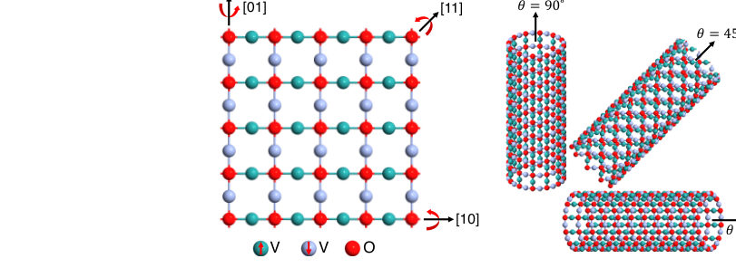
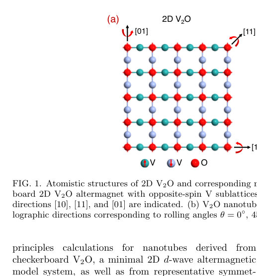
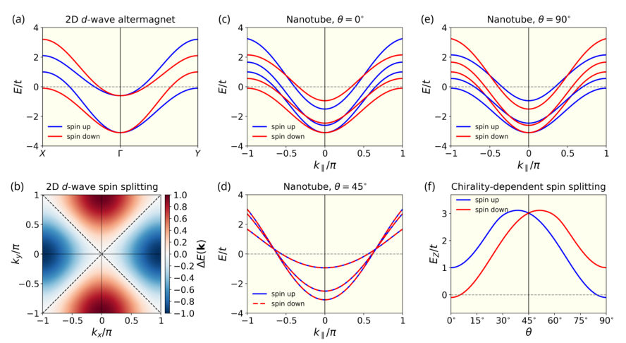
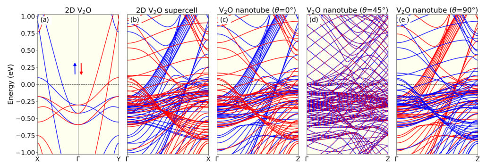
Summary. This work demonstrates that rolling a 2D altermagnetic material into a nanotube converts its momentum-dependent spin splitting into a predictable, chiral-angle-controlled 1D splitting. By using tight-binding models and first-principles calculations, the authors establish dimensional projection as a general method to engineer tunable spin-split quantum states in low-dimensional magnetic nanostructures.
Why it may be interesting. While focused on magnetism, the concept of engineering quantum states by geometric dimensionality reduction (dimensional projection) is relevant for designing novel low-dimensional quantum systems whose properties are controlled by external geometry or strain.
Main problem. The study investigates how the momentum-dependent spin splitting characteristic of 2D altermagnets is transformed into a chiral-angle-controlled 1D spin splitting when the material is physically rolled into a nanotube.
Main result. Dimensional projection successfully transfers this splitting, resulting in a robust $\cos(2 heta)$ angular dependence for the 1D spin splitting, which vanishes at nodal orientations and peaks at antinodal ones.
Method. The research combines analytical derivation using a minimal tight-binding model with validation via first-principles electronic structure calculations.
Model / system. The system models rolling a 2D $d$-wave altermagnet (like $ ext{V}_2 ext{O}$) into a nanotube. The analysis uses Bloch Hamiltonians and dimensional projection techniques on the tight-binding lattice model.
Key observables. Spin splitting ($\Delta E(\mathbf{k})$), which exhibits a characteristic $\cos(2 heta)$ dependence controlled by the rolling angle $ heta$.
Important parameters / regimes. The rolling angle $ heta$, which dictates the orientation relative to the parent material's nodal/antinodal structure.
Assumptions / limitations. The mechanism relies on dimensional projection from a 2D parent state to a 1D nanotube system, and calculations are limited to high-symmetry angles ($ heta = 0^\circ, 45^\circ, 90^\circ$).
Figures summary. Figures illustrate the atomistic structures of nanotubes derived from $ ext{V}_2 ext{O}$ at different rolling angles, alongside band structure plots confirming the $\cos(2 heta)$ dependence of the spin splitting.
Paper structure. The paper establishes the theoretical framework by analyzing the parent 2D altermagnet's Hamiltonian and then applies dimensional projection to derive the effective 1D Hamiltonian. Results are confirmed using both tight-binding models and first-principles calculations across various candidate materials.
Altermagnets exhibit momentum-dependent spin splitting despite having zero net magnetization. Here, we show that rolling a two-dimensional (2D) $d$-wave altermagnet into a nanotube transforms this momentum-dependent spin splitting into chiral-angle-controlled one-dimensional (1D) spin splitting through dimensional projection. Using a minimal tight-binding model and first-principles calculations, we demonstrate that the nanotube spin splitting follows a characteristic $\cos(2θ)$ dependence, vanishing for nodal orientations and reaching extrema for antinodal orientations. The mechanism remains robust across a broad class of nanotubes derived from 2D altermagnets. Our results establish dimensional projection as a general route for transferring momentum-dependent altermagnetic spin splitting into 1D systems and provide a framework for engineering spin-split quantum states in low-dimensional magnetic materials.
Authors: Tamer Taşkıran, Soheil Ershadrad, Biplab Sanyal, Cüneyt Şahin
Type: theory · Category: other · PDF: https://arxiv.org/pdf/2606.08637v1
Analysis basis: full PDF text, analyzed in chunks
Topic relevance: Keldysh / 2PI / non-Gaussian methods 1/5 · analog quantum simulation 1/5 · spintronics-quantum-optics interface 1/5
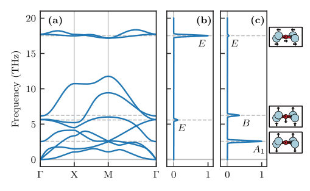
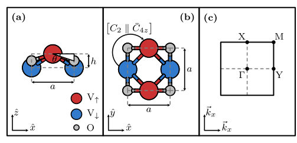
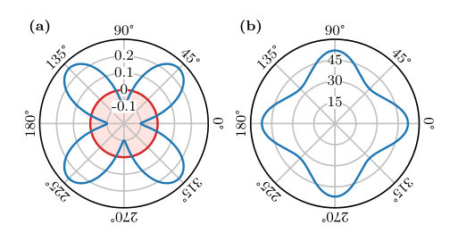
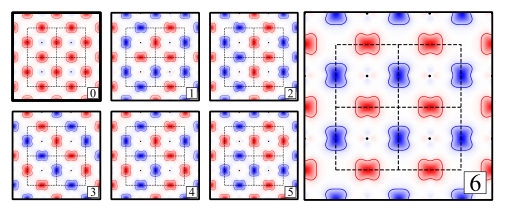
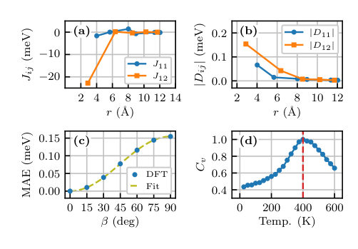
Summary. This work computationally identifies monolayer V2O as a promising altermagnetic material for spintronics. Using DFT calculations, the authors confirm its structural stability and predict key magnetic features, including an out-of-plane easy axis. Crucially, they calculate a large intrinsic spin Hall conductivity, demonstrating its potential for advanced electronic devices.
Why it may be interesting. While the primary focus is on condensed matter magnetism and transport, the rigorous application of DFT to predict emergent quantum phenomena like topological spin Hall effects in novel 2D oxides connects to advanced theoretical modeling techniques relevant across many-body physics.
Main problem. The study aims to identify novel, robust two-dimensional (2D) altermagnetic materials suitable for next-generation spintronic devices.
Main result. Monolayer V2O is proposed as a stable room-temperature altermagnet exhibiting an antiferromagnetic ground state, out-of-plane magnetic anisotropy, and significant intrinsic spin Hall conductivity.
Method. The research employs first-principles calculations using Density Functional Theory (DFT) combined with advanced techniques like DFT+U, HSE06, and Wannierization for transport analysis.
Model / system. The physical system is a monolayer V2O crystal structured in a buckled Lieb lattice. The magnetic behavior is modeled using a full spin Hamiltonian incorporating exchange ($J_{ij}$), Dzyaloshinskii-Moriya ($\vec{D}_{ij}$), and anisotropy terms.
Key observables. Intrinsic Spin Hall Conductivity ($\approx 40 (\hbar/e) ext{ S cm}^{-1}$), momentum-dependent spin splitting (1.2 eV), negative Poisson's ratio (auxetic behavior), and an out-of-plane easy magnetic axis.
Important parameters / regimes. Local magnetic moment ($2.79 \mu_B$ per V atom); lattice parameter $a = 4.01 ext{ Å}$; Néel temperature estimated around $400 ext{ K}$.
Assumptions / limitations. The analysis relies on DFT approximations (PBE, DFT+U) and assumes the material remains stable under room-temperature conditions.
Figures summary. Figures illustrate the structural buckling of V2O, its magnetic spin configuration, and potentially show phonon dispersion or electronic band structures related to transport properties.
Paper structure. The paper follows a standard computational physics structure: first establishing structural/thermodynamic stability (formation energy, phonons, AIMD); then characterizing mechanical properties (auxeticity); followed by detailed magnetic analysis (ground state, anisotropy); and finally calculating electronic/transport responses (spin splitting, SHC).
Altermagnetism has recently emerged as a highly promising phase for spintronics, offering the combined advantages of both antiferromagnets and ferromagnets. Here, using a first-principles analysis based on density functional theory (DFT), we identify a monolayer V$_2$O crystal in a buckled Lieb lattice as a promising two-dimensional altermagnetic material. The structural and thermal stability of V$_2$O is verified through calculations of the crystal's formation energy, phonon structure, room-temperature ab initio molecular dynamics, and stiffness matrix. The system is found to exhibit auxetic behavior with a negative Poisson's ratio. Our calculations indicate an antiferromagnetic ground state with a local magnetic moment of $2.79\,μ_{\mathrm{B}}$ per V atom and a magnetocrystalline anisotropy that favors an out-of-plane easy axis. The electronic structure exhibits a momentum-dependent spin splitting of 1.2 eV, which is a characteristic of altermagnets. Inclusion of spin-orbit coupling breaks the symmetry of the quadratic band crossing near the Fermi level, resulting in a large Berry curvature and significant intrinsic spin Hall conductivity around $40\,(\hbar/e)\,\mathrm{S\,cm^{-1}}$. The results demonstrate that monolayer V$_2$O serves as a robust room-temperature altermagnetic platform, exhibiting magnetic anisotropy and spin-dependent transport responses.
Authors: Jakkapat Seeyangnok, Udomsilp Pinsook
Type: theory · Category: other · PDF: https://arxiv.org/pdf/2606.08423v1
Analysis basis: full PDF text, analyzed in chunks
Topic relevance: Keldysh / 2PI / non-Gaussian methods 1/5 · analog quantum simulation 1/5

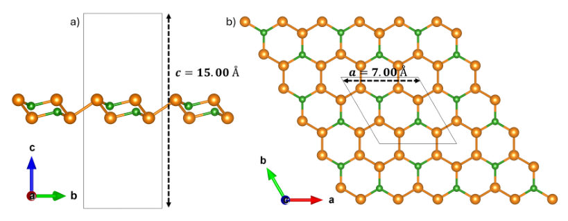
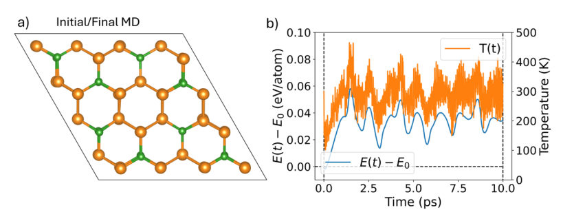
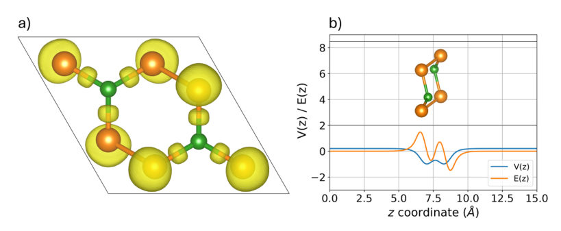

Summary. This theoretical study investigates the superconducting properties of monolayer BAs3 using first-principles calculations. By combining DFT with anisotropic Eliashberg theory, the authors predict that the material is an intrinsic two-gap superconductor with a critical temperature of 3.4 K. The findings highlight how distinct Fermi surface sheets lead to anisotropic pairing interactions mediated by low-frequency phonon modes.
Why it may be interesting. While focused on solid-state physics, the use of advanced many-body theory (Migdal-Eliashberg) to model pairing mechanisms in low dimensions is relevant for understanding emergent quantum phenomena in engineered quantum materials.
Main problem. The study investigates anisotropic and multigap superconductivity in reduced-dimensionality systems, specifically focusing on the hexagonal BAs3 monolayer.
Main result. The calculations predict that monolayer BAs3 is an intrinsic anisotropic two-gap superconductor with a critical temperature of 3.4 K, characterized by distinct superconducting gaps ($\Delta_1=0.75$ meV and $\Delta_2=0.51$ meV).
Method. The research employs first-principles calculations combining Density Functional Theory (DFT) with Density Functional Perturbation Theory (DFPT) and solving the fully anisotropic Migdal–Eliashberg theory.
Model / system. The physical system is the hexagonal BAs3 monolayer, modeled using DFT to determine its structural stability, electronic band structure, and electron-phonon coupling mechanisms. The analysis focuses on multiband characteristics derived from hybridized B-$p$ and As-$p$ orbitals.
Key observables. Superconducting critical temperature ($T_c=3.4$ K), two distinct superconducting gaps ($\Delta_1$, $\Delta_2$), total electron-phonon coupling constant ($\lambda=0.75$), and the anisotropic gap/coupling strength in momentum space.
Important parameters / regimes. Intermediate-coupling regime ($\lambda=0.75$); low-frequency As-derived phonon modes dominate the EPC; 2D limit of superconductivity.
Assumptions / limitations. The calculations rely on approximations such as using GGA functional with PBE, specific Gaussian broadenings for electronic and phononic terms, and solving the anisotropic Eliashberg equations.
Figures summary. Figures illustrate the optimized crystal structure (side/top views), the electron-phonon spectral function ($\alpha^2F(\omega)$) showing low-frequency peaks, and momentum-resolved maps of both the superconducting gap ($\Delta_{\mathbf{k}}$) and the coupling strength ($\lambda_{\mathbf{k}}$).
Paper structure. The paper proceeds by first confirming structural stability (phonon/AIMD), then characterizing the electronic structure (metallic state with multiple bands), followed by calculating the electron-phonon coupling, and finally solving the anisotropic Eliashberg equations to predict $T_c$ and the two-gap nature of the superconductivity.
Two-dimensional superconductors with multiband electronic structures provide an ideal platform for exploring anisotropic and multigap superconductivity in the reduced-dimensionality limit. Here, we investigate the structural, electronic, vibrational, and superconducting properties of a hexagonal BAs$_3$ monolayer using first-principles calculations combined with density functional perturbation theory and fully anisotropic Migdal--Eliashberg theory. The optimized structure is found to be dynamically and thermally stable, as confirmed by phonon calculations and ab initio molecular dynamics simulations. Electronic structure calculations reveal an intrinsic metallic state with multiple bands crossing the Fermi level and several disconnected Fermi-surface sheets derived primarily from hybridized B-$p$ and As-$p$ orbitals. The electron--phonon interaction is dominated by low-frequency As-derived phonon modes, yielding a total electron--phonon coupling constant of $λ=0.75$. Solving the anisotropic Eliashberg equations predicts a superconducting critical temperature of $T_c=3.4$ K. The momentum-resolved superconducting gap exhibits a pronounced two-gap character with gap magnitudes of $Δ_1=0.75$ meV and $Δ_2=0.51$ meV at $T=1$ K. The superconducting gaps remain finite over the entire Fermi surface, demonstrating a fully gapped nodeless superconducting state. Analysis of the momentum-dependent electron--phonon coupling reveals that the two-gap superconductivity originates from sheet-dependent pairing interactions associated with distinct Fermi-surface sheets. Our results establish monolayer BAs$_3$ as an intrinsic anisotropic two-gap superconductor and expand the growing family of boron-based two-dimensional superconductors.
Authors: G. A. Bobkov, V. A. Bobkov, T. Karabassov, I. V. Bobkova, A. A. Golubov
Type: theory · Category: strongly correlated electrons · PDF: https://arxiv.org/pdf/2606.09797v1
Analysis basis: full PDF text, analyzed in chunks
Topic relevance: Keldysh / 2PI / non-Gaussian methods 1/5 · spintronics-quantum-optics interface 1/5
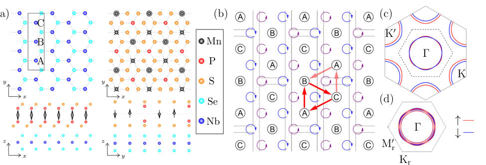
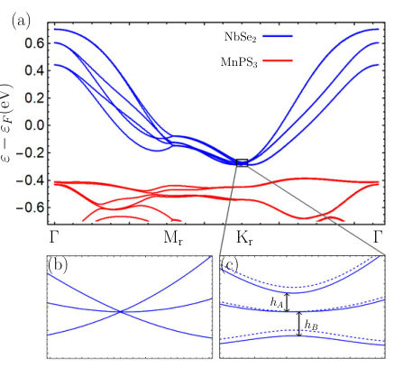
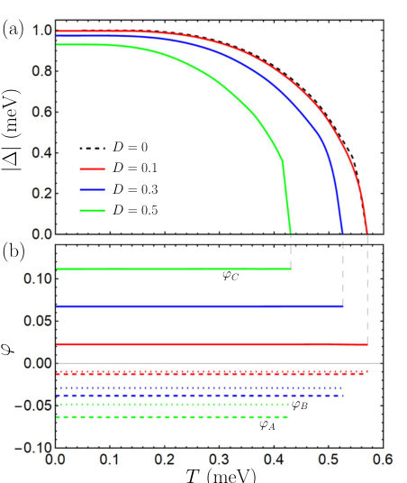
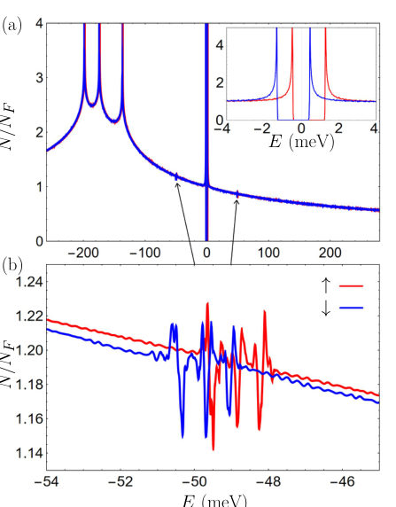

Summary. The paper predicts a novel superconducting state called orbital antiferromagnetism in superconductor/antiferromagnet interfaces. This state is characterized by an atomic-scale periodic modulation of the superconducting order parameter, generating persistent loop currents. The theoretical framework combines DFT and BdG calculations to predict observable signatures like specific dips in the local density of states.
Why it may be interesting. This work deals with exotic pairing mechanisms and orbital magnetism induced by proximity effects in layered materials, which are central topics in modern condensed matter theory relevant to strongly correlated systems.
Main problem. The prediction of a fundamentally new superconducting state—orbital antiferromagnetism—in superconductor/antiferromagnet heterostructures.
Main result. The predicted state is unique, exhibiting atomic-scale loop currents and remaining stable over the full parameter range, unlike FFLO or helical states.
Method. Combining first-principles electronic structure (DFT) with Bogoliubov–de Gennes (BdG) calculations to analyze superconducting order parameter modulation.
Model / system. The system is an S/AF heterostructure, exemplified by NbSe2/MnPS3. The physics is governed by a tight-binding Hamiltonian incorporating proximity-induced exchange fields and Ising spin–orbit coupling.
Key observables. Characteristic finite-energy dips in the local density of states (LDOS); periodic phase modulation of the superconducting order parameter ($\Delta_i$).
Important parameters / regimes. The ratio of induced exchange field to superconducting gap ($|\mathbf{h}|/\Delta$); interface transparency ($D$).
Assumptions / limitations. The analysis often assumes $|\mathbf{h}_{A,B,C}| \ll \Delta$ for analytical treatments, though numerical solutions are used when this is violated.
Figures summary. Figures illustrate the heterostructure geometry and current loops; electronic band structures show folded Brillouin zones; LDOS plots reveal finite-energy dips corresponding to OP inhomogeneity.
Paper structure. The paper progresses from defining the physical problem in S/AF heterostructures, developing the Hamiltonian and theoretical framework using Green's functions, calculating the superconducting order parameter modulation, and finally analyzing related phenomena like triplet correlations based on magnetic field type (ferri vs. antiferro).
We predict a fundamentally new superconducting state in superconductor/antiferromagnet heterostructures with Ising spin--orbit coupling: proximity-induced orbital antiferromagnetism. In this state, the order parameter acquires a periodic phase modulation locked to the magnetic lattice, generating atomic-scale loop currents with opposite orbital moments on neighboring unit cells. Its emergence requires at least three nonequivalent magnetic sublattices per unit cell and finite spin--orbit coupling. Using NbSe$_2$/MnPS$_3$ as a concrete example, we combine first-principles and Bogoliubov--de Gennes calculations to demonstrate that the proximity-induced exchange field leads to robust phase modulation. Unlike FFLO and helical states, the phase gradient is atomic-scale, the state is current-carrying, and it remains uniquely stable over the full parameter range. The state manifests as characteristic finite-energy dips in the local density of states, accessible by STM.
Authors: E. Bell, C. Hnatovsky, K. W. Baldwin, L. N. Pfeiffer, K. W. West, S. Studenikin, M. A. Zudov
Type: experiment · Category: other · PDF: https://arxiv.org/pdf/2606.09755v1
Analysis basis: full PDF text, analyzed in chunks
Topic relevance: non-equilibrium dynamics 1/5 · spintronics-quantum-optics interface 1/5
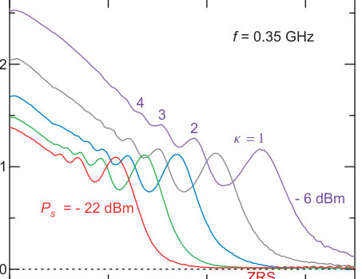
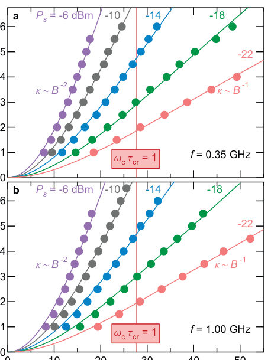
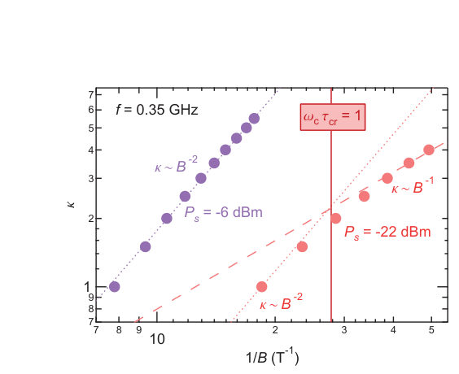
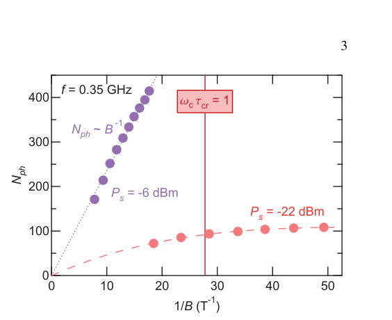
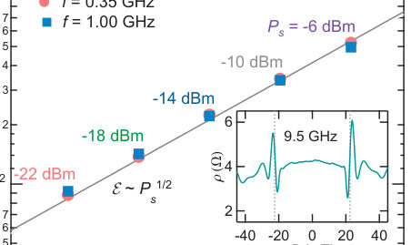
Summary. This paper reports on Radiowave-induced Resistance Oscillations (RIROs) observed in a 2DEG, distinguishing them from standard MIROs by noting their occurrence when the cyclotron frequency is much larger than the radiation frequency. The authors demonstrate that these oscillations are governed by the electric field and can be explained theoretically using a displacement model incorporating short-range disorder effects.
Why it may be interesting. The work provides an excellent example of how nonlinear transport phenomena can be probed using external fields (RF radiation) in condensed matter systems. The clear distinction between MIROs and RIROs highlights the sensitivity of quantum transport measurements to both the frequency regime ($\omega$ vs $\omega_c$) and the underlying physical mechanism (single-photon vs displacement/disorder effects).
Main problem. The paper investigates a new class of magneto-resistance oscillations, termed Radiowave-induced Resistance Oscillations (RIROs), which are distinct from the well-known Microwave-induced Resistance Oscillations (MIROs). It aims to characterize these oscillations under radiofrequency irradiation.
Main result. The authors report observing RIROs in a regime ($\omega_c \gg \omega$) where they are independent of radiation power and exhibit periodicities ($1/B$ or $1/B^2$) controlled by the electric field rather than the microwave frequency. The findings confirm a theoretical displacement model explanation.
Method. The study involves measuring longitudinal resistivity ($ ho$) as a function of magnetic field ($B$) while irradiating a 2DEG with radiofrequency radiation, and analyzing the dependence of oscillation periodicity on source power and frequency.
Model / system. The physical system is a two-dimensional electron gas (2DEG) in a GaAs/AlGaAs quantum well structure. The theoretical explanation relies on a displacement model applied to photoresistance, particularly considering the contribution from short-range disorder.
Key observables. Longitudinal resistivity ($ ho$) vs $B$, oscillation maxima ($\kappa$), extracted radiation electric field ($E$), and the number of participating photons ($N_{ph}$).
Important parameters / regimes. The ratio $\omega_c au_{cr}$ (cyclotron frequency times scattering time), the radiation frequency ($\omega$), and the magnetic field dependence leading to crossovers between $B^{-2}$ and $B^{-1}$ periodicity.
Assumptions / limitations. The analysis assumes the oscillations can be explained by a displacement contribution in the limit of short-range disorder, and it models the electric field extraction based on source power ($E \propto P_s^{1/2}$).
Figures summary. Figures show $ ho$ vs $B$ demonstrating RIROs and zero-resistance states; plots illustrate the crossover of oscillation periodicity ($\kappa$) between $B^{-2}$ and $B^{-1}$ regimes at a critical point; and other figures confirm the scaling of the extracted electric field ($E \propto \sqrt{P_s}$) and photon number ($N_{ph}$).
Paper structure. The paper establishes the novelty of RIROs compared to MIROs by detailing their distinct physical conditions ($\omega_c \gg \omega$). It then presents experimental evidence showing power-independent amplitude, field-controlled periodicity, and a crossover in periodicity dependence on $B$. Finally, it connects these observations to a theoretical displacement model.
Microwave-induced resistance oscillations (MIROs) \cite{zudov:2001a} occur when a 2D electron gas is subjected to radiation of frequency $ω= 2 πf$ and varying magnetic field $B$. MIROs are periodic in $1/B$, with the period determined by the radiation frequency $ω$, and their amplitude scales with the radiation power. Stepping from single-photon transitions between Landau levels, MIROs are found on the lower-field side of the cyclotron resonance, $ω_c \lesssim ω$, where $ω_c$ is the cyclotron frequency. Here, we report on experimental observation of another class of magneto resistance oscillations, which are also induced by radiation, but in the radio frequency (UHF band) range. These oscillations are distinct from MIROs in the following aspects: (i) they occur at $ω_c \gg ω$, (ii) their amplitude is independent of radiation power, (iii) their period is controlled by the radiation electric field, rather than by $ω$, and (iv) they can be either $1/B$ or $1/B^2$-periodic, depending on $B$. We further show that these oscillations can be explained by a displacement model in the limit of short-range disorder.
Authors: Yan Meng, Kainan Chang, Wei Song, Yuwei Shan, Jin Luo Cheng, Luxia Wang
Type: theory · Category: other · PDF: https://arxiv.org/pdf/2606.09232v1
Analysis basis: full PDF text, analyzed in chunks
Topic relevance: Keldysh / 2PI / non-Gaussian methods 1/5 · interference shaping light 1/5
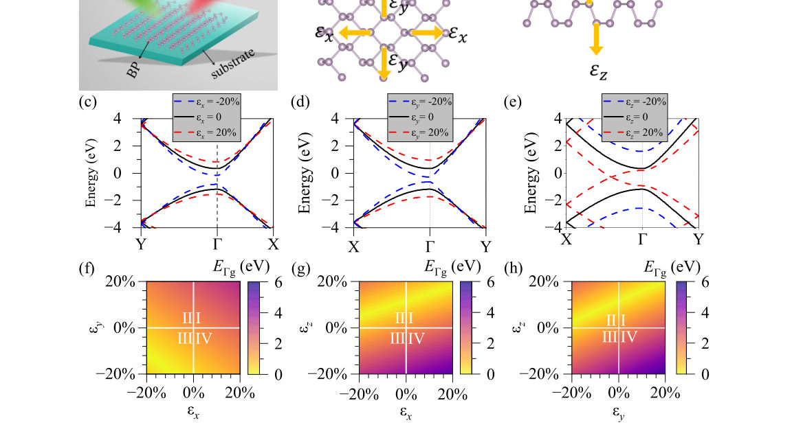
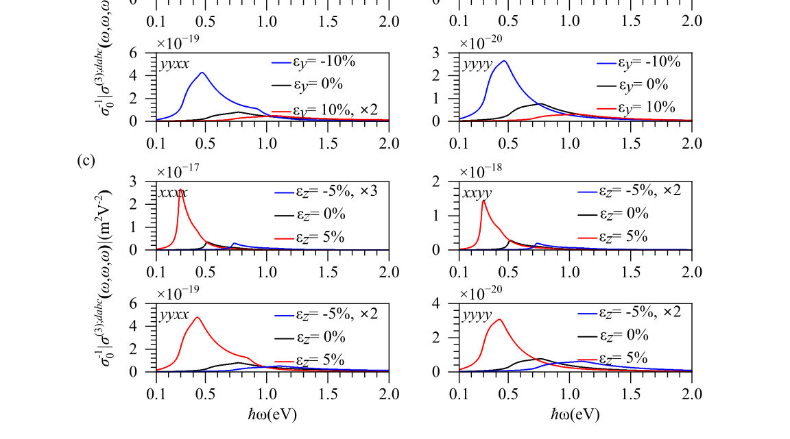
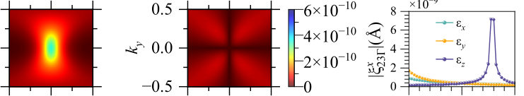

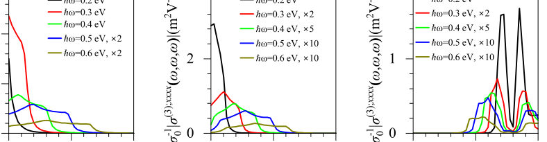
Summary. This theoretical study investigates strain engineering as a method to control Third-Harmonic Generation (THG) in monolayer black phosphorene. By modeling the system using tight-binding theory and Bloch equations, the authors demonstrate that applying uniaxial or biaxial strain can dramatically tune the THG signal's intensity and spectral shift. This establishes strain as a powerful tool for developing reconfigurable nonlinear photonic devices.
Why it may be interesting. This work provides a concrete example of how external mechanical stimuli (strain) can be used to engineer quantum optical responses in 2D materials, which is highly relevant for designing tunable photonic devices and understanding light-matter interactions beyond simple linear optics.
Main problem. The study systematically reveals the microscopic mechanism by which strain engineering can tune Third-Harmonic Generation (THG) in monolayer black phosphorene (BP).
Main result. Strain significantly controls THG, with compressive strain and out-of-plane tension enhancing the signal via redshift, while tensile strains cause suppression and blueshifts. The tuning efficiency follows a strong directional dependence ($z > y > x$).
Method. The research employs a theoretical framework combining a tight-binding model Hamiltonian with semiconductor Bloch equations to calculate nonlinear optical susceptibilities.
Model / system. The physical system is monolayer Black Phosphorene (BP), modeled using a four-band tight-binding Hamiltonian. Strain effects are incorporated by modifying hopping parameters based on lattice deformation, and the THG response is calculated via third-order nonlinear conductivity components.
Key observables. Third-harmonic generation susceptibility ($\chi^{(3)}$) or conductivity ($\sigma^{(3)}$), bandgap energy ($E_{\Gamma g}$), and Berry connection components.
Important parameters / regimes. Strain levels (uniaxial $\epsilon_x, \epsilon_y, \epsilon_z$ up to $\pm 10\%$), photon frequency ($\hbar\omega$), and strain coefficients ($\alpha_{\gamma i}$).
Assumptions / limitations. The electronic excitation is described by a four-band tight-binding model, and the strain effect on hopping parameters uses an approximation based on Harrison's rule.
Figures summary. Figures illustrate the spectra of $\sigma^{(3)}$ under various uniaxial strains ($x, y, z$), showing shifts and intensity changes correlated with bandgap tuning. Biaxial strain effects are also mapped out across different quadrants.
Paper structure. The paper progresses by establishing the theoretical model (tight-binding + Bloch equations), analyzing the intrinsic anisotropy of THG in unstrained BP, and then systematically mapping the response to uniaxial strains ($x, y, z$) before exploring complex biaxial strain combinations.
Based on the tight-binding model and the semiconductor Bloch equations, this work systematically reveals the microscopic mechanism of strain engineering in turning of third-harmonic generation (THG) in monolayer black phosphorene (BP). % The results show that under strain-free conditions, monolayer BP exhibits significant in-plane anisotropy, and its dominant susceptibility component reaches a maximum of $χ^{(3);xxxx} = 1.8 \times 10^{-17} \, \text{m}^2/\text{V}^2$, agreeing well with the experimental results. % By applying uniaxial and biaxial strains along the armchair ($x$), zigzag ($y$), and out-of-plane ($z$) directions, we find that the THG response presents strong direction dependence and unique spectral shifting behaviors: in-plane compressive strain and out-of-plane tensile strain both significantly enhance the THG conductivity and induce a redshift, whereas in-plane tensile strain and out-of-plane compression lead to suppression and a blueshift, with the tuning efficiency following the order of $z > y > x$. The microscopic origin of these phenomena is identified as the synergistic modulation of the bandgap and Berry connection by strain. % Furthermore, the synergistic or competitive effects of biaxial strain further enrich the manipulation of THG signals. % Strain engineering can serve as an effective strategy for dynamically controlling nonlinear optical processes in two-dimensional materials, and it also lays a theoretical foundation for the development of high-performance reconfigurable infrared photonic devices.
Authors: Tharanga R. Nanayakkara, Ananya Chattaraj, Mingzhao Liu, Charles T. Black
Type: experiment · Category: other · PDF: https://arxiv.org/pdf/2606.07848v1
Analysis basis: full PDF text, analyzed in chunks
Topic relevance: QC/QI experiment 1/5
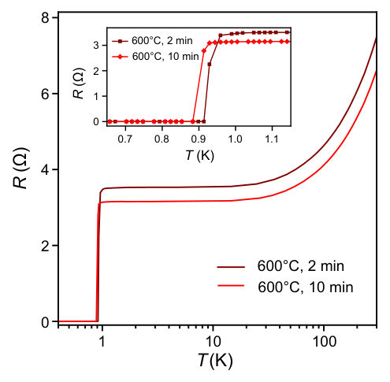
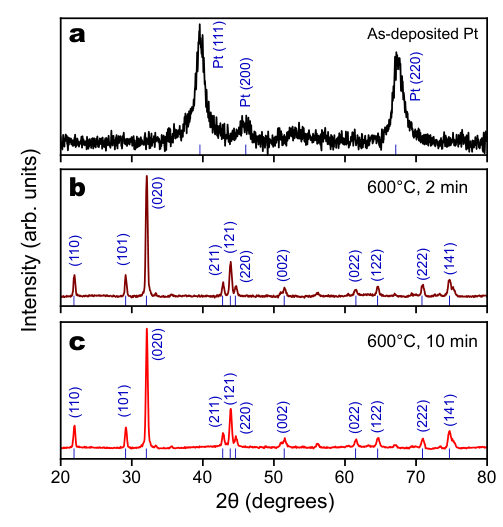
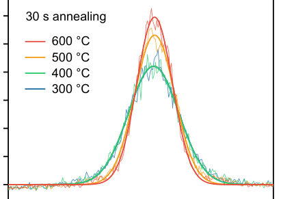
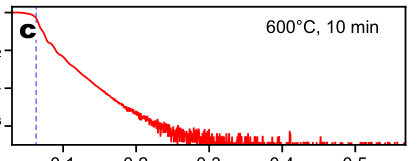
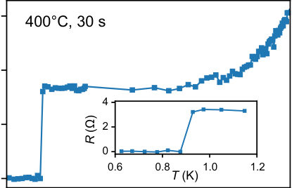
Summary. This work characterizes the formation of superconducting PtSi thin films on silicon by varying annealing conditions. Using XRD, XRR, and electrical tests, the authors establish that rapid thermal processing defines a stable window for device fabrication. The key finding is that interface quality degradation occurs during the final phase conversion step, not due to prolonged high-temperature exposure.
Why it may be interesting. While focused on materials science, understanding controlled solid-state reactions and interface engineering is crucial for fabricating quantum devices where material interfaces dictate coherence and energy loss mechanisms.
Main problem. The study systematically investigates how phase formation, microstructure, and interface quality of Platinum Silicide (PtSi) thin films are affected by annealing conditions for use in superconducting quantum devices.
Main result. A robust processing window exists where PtSi forms rapidly and maintains stable superconducting properties even under short-time, moderate-temperature annealing protocols. Interfacial roughening is shown to be an intrinsic consequence of the $ ext{Pt}_2 ext{Si}$-to-$ ext{PtSi}$ conversion step.
Method. The research employed a combination of advanced characterization techniques including Grazing-Incidence X-ray Diffraction (GIXRD), X-ray Reflectivity (XRR), and electrical transport measurements across varying annealing temperatures and durations.
Model / system. The physical system is PtSi thin films deposited on silicon substrates, which are processed via thermal annealing to induce the superconducting phase. The process involves controlled solid-state reactions between Platinum and Silicon.
Key observables. Superconducting transition temperature ($T_c$), Residual Resistivity Ratio ($ ext{RRR}$), film thickness, interface roughness (from XRR), and crystalline phases (from XRD).
Important parameters / regimes. Annealing Temperature ($300-600^\circ ext{C}$) and Duration (short times like $30 ext{ s}$ vs. long times).
Assumptions / limitations. The superconducting properties are highly dependent on achieving the pure PtSi phase, and the study assumes that rapid thermal processing can define a stable operational window.
Figures summary. Figures show XRD scans detailing phase progression ($ ext{Pt} o ext{Pt}_2 ext{Si} o ext{PtSi}$) and XRR measurements comparing interface roughness across different reaction steps, highlighting the source of disorder.
Paper structure. The paper systematically analyzes the effect of annealing time (long vs. short) and temperature on phase purity, microstructure evolution, and superconducting performance, culminating in defining a stable processing window for device fabrication.
Platinum silicide (PtSi) thin films are promising for silicon-based superconducting quantum devices due to their compatibility with CMOS fabrication, air stability, and superconducting transition temperature near 1 K. We report a systematic study of PtSi phase formation, microstructure, and interface quality as a function of annealing temperature and duration, characterizing films using grazing-incidence X-ray diffraction, X-ray reflectivity, and electrical transport measurements. Phase-pure PtSi forms within minutes by rapid thermal processing at 600 °C and is stable under extended annealing, while 30 s anneals across 300-600 °C yield equivalent film quality with consistent microstructure and superconducting properties. X-ray reflectivity reveals that interfacial roughening is an intrinsic consequence of the Pt2Si-to-PtSi conversion step rather than a result of elevated temperature or prolonged annealing. These results establish a robust processing window for PtSi formation in silicon-based superconducting device fabrication flows.
Authors: Renhai Wang, Shiya Chen, Feng Zheng, Zhen Zhang, Xingzhi Wang, Huafeng Dong, Cai-Zhuang Wang, Vladimir Antropov, Kai-Ming Ho, Yang Sun
Type: both · Category: other · PDF: https://arxiv.org/pdf/2606.07930v1
Analysis basis: full PDF text, analyzed in chunks
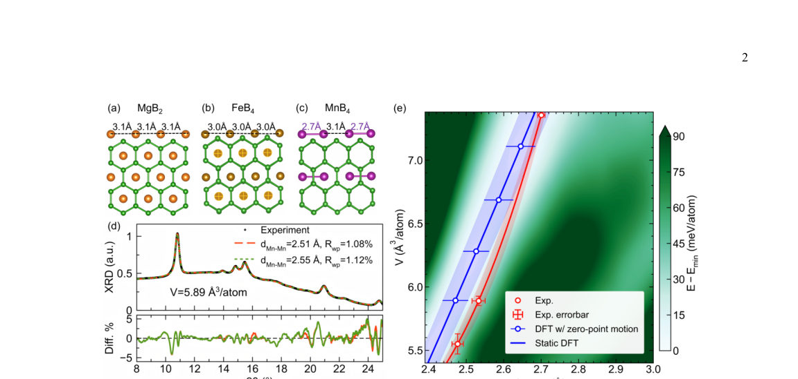
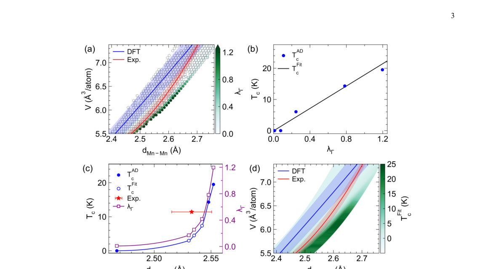
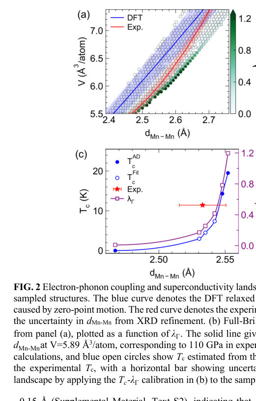
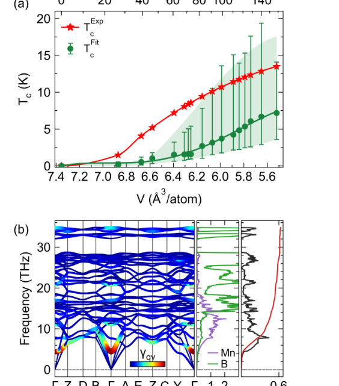
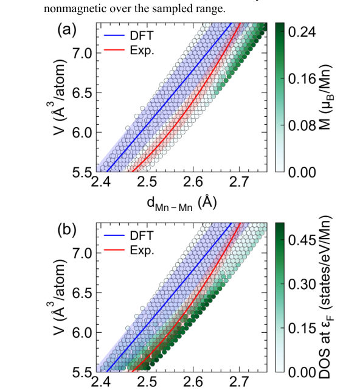
Summary. This work resolves the mystery of pressure-induced superconductivity in $ ext{MnB}_4$ by demonstrating that structural compression must be described using two parameters: volume and the Mn-Mn dimer distance. By calculating electron-phonon coupling across this extended structural space, the authors successfully predict the experimentally observed critical temperature via established BCS/EPC theory.
Why it may be interesting. While focused on condensed matter superconductivity, the methodology of treating structural instability via multiple coupled degrees of freedom ($V$ and $ ext{d}_{ ext{Mn}- ext{Mn}}$) provides a generalizable framework for understanding phase transitions in complex materials where simple single-parameter descriptions fail.
Main problem. The primary goal is to elucidate the mechanism behind pressure-induced superconductivity in $ ext{MnB}_4$, as initial calculations failed to match experimental critical temperatures ($T_c$). The study investigates how structural changes influence electron-phonon coupling (EPC) in this material.
Main result. Superconductivity can be successfully explained by EPC theory when the structural response is mapped using both volume and the $ ext{Mn}- ext{Mn}$ dimer distance as independent parameters. Calculations predict $T_c \approx 14 ext{ K}$ near $150 ext{ GPa}$, matching experimental findings.
Method. The research combines Density Functional Theory (DFT) calculations with advanced phonon theory to compute EPC strength ($\lambda$) and estimate $T_c$ using the Allen-Dynes formula. Structural mapping is achieved by analyzing the energy landscape in the volume-$ ext{d}_{ ext{Mn}- ext{Mn}}$ space.
Model / system. The system studied is $ ext{MnB}_4$, which is treated as a highly responsive material exhibiting structural instability characterized by Mn-Mn dimerization. The theoretical framework relies on modeling the interplay between lattice structure, electronic band filling, and vibrational modes (phonons).
Key observables. Superconducting critical temperature ($T_c$), electron-phonon coupling constant ($\lambda_{\Gamma}$), $ ext{Mn}- ext{Mn}$ dimer distance ($ ext{d}_{ ext{Mn}- ext{Mn}}$), and electronic density of states at the Fermi level ($N(E_F)$).
Important parameters / regimes. Pressure (P) up to $150 ext{ GPa}$, Volume ($V$), and $ ext{d}_{ ext{Mn}- ext{Mn}}$.
Assumptions / limitations. The superconducting behavior is governed by the electron-phonon coupling mechanism, allowing for the use of the Allen-Dynes formula. The structural response is assumed to be tunable across a defined $V- ext{d}_{ ext{Mn}- ext{Mn}}$ manifold.
Figures summary. Figures illustrate the comparison between DFT and experimental XRD data mapping the $V- ext{d}_{ ext{Mn}- ext{Mn}}$ energy landscape. They also show how $\lambda_{\Gamma}$ and $T_c$ increase rapidly with increasing $ ext{d}_{ ext{Mn}- ext{Mn}}$ at fixed volume, confirming the role of dimer stretching modes.
Paper structure. The paper first establishes the failure of simple volume-based models. It then introduces $ ext{d}_{ ext{Mn}- ext{Mn}}$ as a crucial structural parameter, mapping the full energy landscape. Subsequently, it calculates EPC parameters ($\lambda_{\Gamma}$) across this space, demonstrating that the observed $T_c$ is robustly explained by strong coupling mechanisms linked to dimer bond changes.
The origin of pressure-induced superconductivity in MnB4 remains unclear. Here we show that it can be explained by electron-phonon coupling once the structural space is mapped using both volume and the Mn dimer distance as key structural parameters under compression. Minor changes in the dimer distance significantly affect electronic and phonon properties, bringing the calculated Tc into agreement with experiment. Our results suggest that MnB4 is a highly responsive system, providing a platform for probing the subtle interplay between structural instability, superconductivity and magnetism.